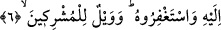

organ da perdelenmiş olunca, bu, olabilecek en güçlü (kalın) perde olmuş olur. Yüce
Allah’a sığınırız!
Bazı müfessirler der ki: Onların kalpleri, hak dâvetine karşı perde içinde, kulakları
hakkın nidâsına ve seslenişlerine karşı tam bir sağırlık ve vurdum duymazlık içindedir.
Onlarla hak arasına bir ünsiyetsizlik (vahşet) ve nefret konulmuş olduğu içindir ki
yollarını aydınlatacak ışıkları görmeleri engellenmiş ve bu yüzden inkâra düşmüşlerdir.
Bu kararmış kalplerde sabahlar hep fecr-i kâzibtir,
Eğer bir kimse yed-i beyzâ olmuşsa aydınlıktadır.
“Onun için sen (istediğini) yap, biz de yapmaktayız!” Sen kendi dînin üzerinde
istediğini yap, biz de kendi dînimiz üzerinde yapacağız.
6. De ki: Ben de ancak sizin gibi bir insanım. Bana ilâhınızın bir tek İlâh olduğu
vahy olunuyor. Artık O’na yönelin, O’ndan mağfiret dileyin. Ortak koşanların vay
hâline!
Onlara “söyle: Ben de ancak sizin gibi bir insanım. Bana, ilâhınızın tek bir ilâh
olduğu,”; yani, sizin tanrınızın tek bir tanrı olup ondan başka hiçbir tanrı bulunmadığı
“vahyolunuyor.”
Bu ifâde, müşriklerin (peygamberlikle ilgili olarak) dillendirdikleri düşüncelere nasıl
cevap verilmesi gerektiğini göstermektedir. Şöyle ki: Ben sizden farklı bir cinsten
değilim ki bu yüzden aramızda bir perde bulunmuş olsun da “İstediğini yap, biz de
yapacağız.” ifâdesinin ortaya koyduğu şekilde, icraat ve dinlerimizin farklı olmasını
gerektirecek bir zıtlık olsun. Aksine ben de bir beşerim, sizler gibi bir âdemoğluyum.
Bana da sizlere emredilen şeyler emrediliyor; çünkü tevhîd esası hem beni hem de sizi
içine alan genel bir ifâde kullanılarak hepimize bildiriliyor. Çünkü “ilahınızın”
ifâdesindeki hitap “hikâye” tarzı bir hitap olup, Hz. Peygamber (s.a.)’in, kâfirlere
yönelttiği “sizin gibi” ifâdesindeki gibi bir hitap değildir; sadece muhataplara şâmil
olmayıp hepsine aynı anda hitap eder.
et-Te’vîlâtü’n-Necmiyye’de bu âyetin işârî yorumu şu şekilde yapılmıştır: Bütün
insanlar “beşeriyyet” konusunda birbirlerine denktir. Ma’rifet kapısı -yani Allah’ı akıl
vb. beşerî âletler vâsıtası ile tek bir ilâh olarak tanıma kapısı- bunların yüzüne
kapatılmıştır. Bu kapı ancak peygamberlerin kalplerine vahiy yoluyla; velîlerin
gönüllerine şâhid ve keşifler vâsıtası ile; müminlerin gönüllerine de ilham ve şerh-i
sadr aracılığıyla açılır. Nitekim “Şimdi, Allah’ın; göğsünü teslimiyet için açıp
genişlettiği (‘şerh’ ettiği) ve böylece Rabbından gelmiş bir nur üzere bulunan